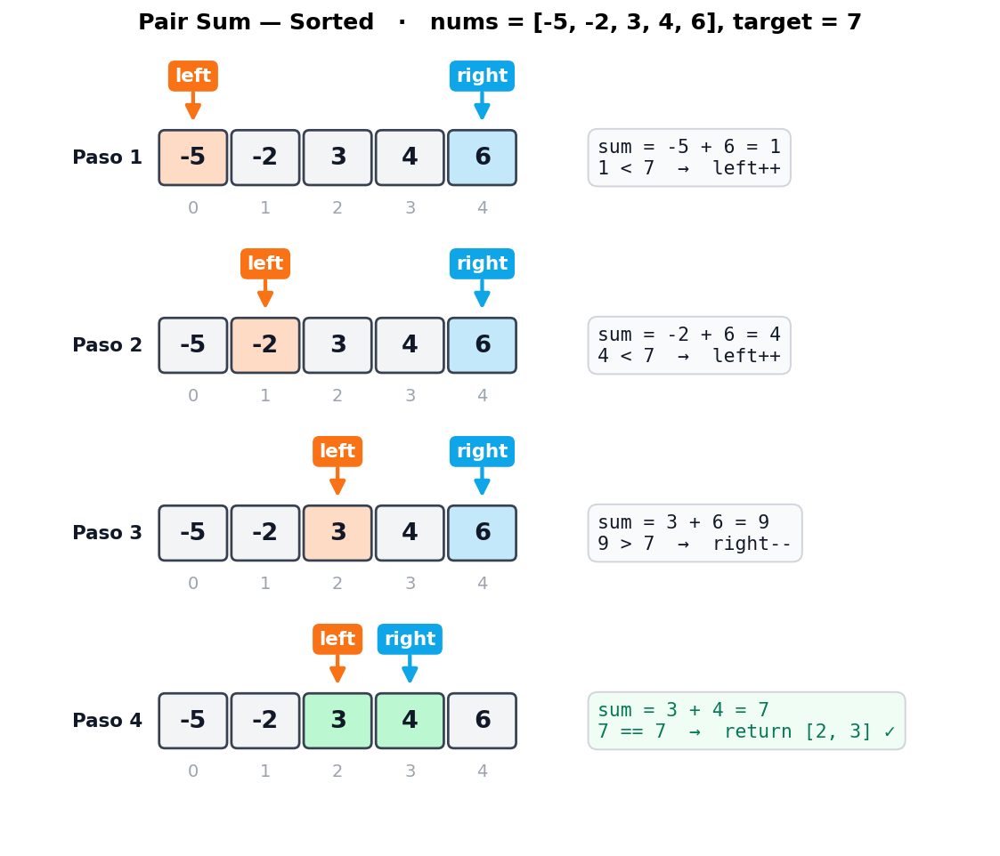
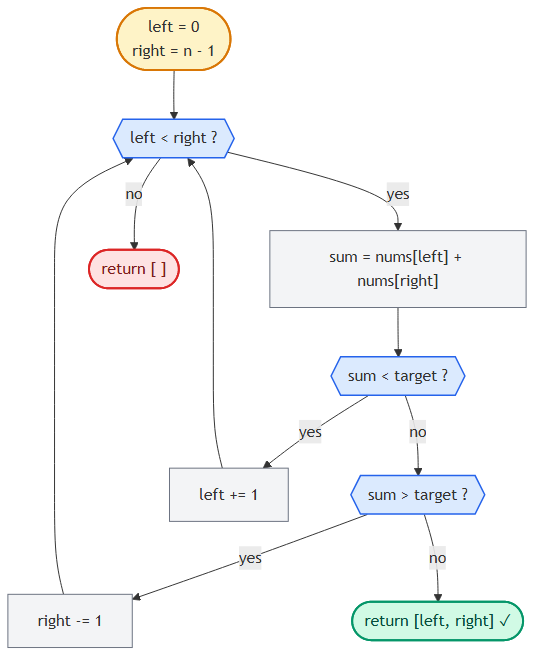

Pair Sum - Sorted
📍 Two Pointers · Problema 1/6 · ⬅ Introduction · 🏠 Chapter · Triplet Sum ➡ · 📚 KB Index
TL;DR — Dado un array ordenado ascendente y un target, encontrar dos índices cuyos valores sumen el target. Two pointers desde los extremos: si la suma es chica, mover
left++; si es grande, moverright--; si es igual, listo. O(n) tiempo, O(1) espacio.
📑 In this entry¶
- 🎓 For Dummies — empezá por acá
- Problema
- Brute force (y por qué no alcanza)
- La intuición de two pointers
- Trace paso a paso
- Decision flowchart
- Implementación
- Complexity Analysis
- Test Cases
- ⭐ Amplification: variantes y follow-ups
- ⚠️ Pitfalls
- Interview Tips
🎓 For Dummies — empezá por acá¶
Analogía: estás en una góndola del super con productos ordenados de más barato a más caro (de izquierda a derecha). Te dicen: “comprá dos productos que sumen exactamente $7”.
Forma boluda (brute force): agarrás el primero, lo combinás con cada uno de los otros. Si no, agarrás el segundo, lo combinás con cada uno de los siguientes. Etc. Eso son n × n combinaciones.
Forma piola (two pointers):
- Una mano en el más barato (izquierda).
- La otra mano en el más caro (derecha).
- Sumás los precios:
- Si suma menos que $7 → la mano izquierda se corre a la derecha (a algo más caro). La mano derecha no se mueve, porque si la moviera a la izquierda, la suma sería aún más chica.
- Si suma más que $7 → la mano derecha se corre a la izquierda (a algo más barato).
- Si suma exacto → bingo.
La pregunta clave: ¿por qué solo movés una mano por vez? Porque la otra ya tiene la mejor opción posible en su dirección. Por ejemplo, si la suma es chica y movés right a la izquierda, la suma se hace aún más chica — eso nunca te va a acercar al target. La única jugada que sirve es subir la izquierda.
Trampas comunes¶
- ⚠️ No te olvides que el array tiene que estar sorted. Si está unsorted, two pointers no funciona acá. Tendrías que ordenarlo primero (O(n log n)) o usar un hash map (O(n) tiempo + O(n) espacio).
- ⚠️
while left < right, no<=. Si usás<=, comparás un elemento contra sí mismo, y el problema dice “pair”, o sea dos índices distintos. - ⚠️ Devolvé
[left, right], no[nums[left], nums[right]]. El problema pide índices, no valores. Es un error clásico de leer rápido.
¿Listo para la versión completa? ⬇️
Problema¶
Dado un array de enteros ordenado ascendente y un target, devolvé los índices de cualquier par de números que sumen el target. El orden de los índices en el resultado no importa. Si no hay par válido, devolvé un array vacío.
Ejemplo 1¶
Input: nums = [-5, -2, 3, 4, 6], target = 7
Output: [2, 3]
Explicación: nums[2] + nums[3] = 3 + 4 = 7
Ejemplo 2¶
Input: nums = [1, 1, 1], target = 2
Output: [0, 1]
Explicación: cualquier par de índices distintos cuyos valores sumen 2 es válido.
[1, 0], [0, 2], [2, 0], [1, 2], [2, 1] también serían correctos.
Brute force (y por qué no alcanza)¶
La solución obvia es probar todas las combinaciones con dos for-loops anidados:
function pairSumSortedBruteForce(nums, target) {
const n = nums.length;
for (let i = 0; i < n; i++) {
for (let j = i + 1; j < n; j++) {
if (nums[i] + nums[j] === target) {
return [i, j];
}
}
}
return [];
}
Tiempo: O(n²). Espacio: O(1).
Funciona, pero no usa la información de que el array está sorted. Cuando te dan datos con estructura, no aprovecharla en una entrevista es señal mala. ¿Cómo explotamos el orden?
La intuición de two pointers¶
Empecemos con el par más extremo posible: el primer y el último elemento.
nums = [ -5 -2 3 4 6 ]
índice: 0 1 2 3 4
▲ ▲
left right
sum = nums[0] + nums[4] = -5 + 6 = 1
La suma es 1, que es menor que el target 7. ¿Cómo aumentamos la suma?
Tenemos dos opciones lógicas:
- Mover
lefta la derecha → como el array está ordenado ascendente, el nuevonums[left]es ≥ al anterior. La suma aumenta o se queda igual. ✓ - Mover
righta la izquierda → el nuevonums[right]es ≤ al anterior. La suma disminuye o se queda igual. ✗ (eso nos aleja del target)
Conclusión: si la suma es muy chica, movemos left. Por simetría:
- Si la suma es muy chica →
left++(subir el menor para subir la suma). - Si la suma es muy grande →
right--(bajar el mayor para bajar la suma). - Si la suma es igual al target → encontramos el par, devolvemos
[left, right].
Cuando los punteros se cruzan (left >= right), recorrimos todo el espacio de pares posibles sin encontrar el target. Devolvemos [].
Insight clave: cada movimiento del puntero descarta un montón de pares de un saque. Cuando movés
lefta la derecha porque la suma era chica, estás diciendo “ningún par formado connums[left]y un valor ≤nums[right]puede sumar el target”. Eso elimina toda una columna del espacio de búsqueda.
Trace paso a paso¶
Ejemplo: nums = [-5, -2, 3, 4, 6], target = 7.

4 iteraciones para un array de 5 elementos. Comparado con las 10 comparaciones del brute force (5×4/2), el ahorro ya se nota. En arrays grandes la diferencia es brutal: 1.000.000 elementos serían 1.000.000 iteraciones vs 500.000.000.000.
Decision flowchart¶

Implementación¶
JavaScript¶
function pairSumSorted(nums, target) {
let left = 0;
let right = nums.length - 1;
while (left < right) {
const sum = nums[left] + nums[right];
if (sum < target) {
// Suma muy chica: subir el menor para que la suma crezca.
left++;
} else if (sum > target) {
// Suma muy grande: bajar el mayor para que la suma decrezca.
right--;
} else {
// Encontramos el par: devolver índices.
return [left, right];
}
}
return [];
}
C¶
public int[] PairSumSorted(int[] nums, int target) {
int left = 0, right = nums.Length - 1;
while (left < right) {
int sum = nums[left] + nums[right];
if (sum < target) {
// Suma muy chica: subir el menor para que la suma crezca.
left++;
} else if (sum > target) {
// Suma muy grande: bajar el mayor para que la suma decrezca.
right--;
} else {
// Encontramos el par: devolver índices.
return new int[] { left, right };
}
}
return Array.Empty<int>();
}
Complexity Analysis¶
| Métrica | Valor | Por qué |
|---|---|---|
| Tiempo | O(n) | En cada iteración movemos left o right (o ambos al encontrar el par y salir). Como left solo crece y right solo decrece, hacemos a lo sumo n iteraciones antes de que se crucen. |
| Espacio | O(1) | Solo guardamos las variables left, right, sum. No depende del tamaño del input. |
Comparación con alternativas¶
| Approach | Tiempo | Espacio | Requiere sorted? |
|---|---|---|---|
| Brute force (doble for) | O(n²) | O(1) | No |
Hash map (target - nums[i]) |
O(n) | O(n) | No |
| Two pointers | O(n) | O(1) | Sí |
| Sort + two pointers (si input unsorted) | O(n log n) | O(1) o O(n) según sort | — |
Two pointers gana cuando el array ya viene sorted (no pagás el sort) y querés O(1) espacio.
Test Cases¶
| Input | Expected output | Descripción |
|---|---|---|
nums = [], target = 0 |
[] |
Array vacío. |
nums = [1], target = 1 |
[] |
Un solo elemento — no hay par posible. |
nums = [2, 3], target = 5 |
[0, 1] |
Dos elementos que suman al target. |
nums = [2, 4], target = 5 |
[] |
Dos elementos que no suman al target. |
nums = [2, 2, 3], target = 5 |
[0, 2] o [1, 2] |
Duplicados — cualquier par válido sirve. |
nums = [-1, 2, 3], target = 2 |
[0, 2] |
Un valor negativo en el par. |
nums = [-3, -2, -1], target = -5 |
[0, 1] |
Ambos valores negativos. |
nums = [1, 2, 3, 4, 5], target = 100 |
[] |
Target imposible. |
nums = [0, 0], target = 0 |
[0, 1] |
Caso borde con ceros. |
⭐ Amplification: variantes y follow-ups¶
Variante 1: array unsorted¶
Si el input no está sorted, tenés dos caminos:
| Approach | Cuándo elegirlo |
|---|---|
| Sort + two pointers | Si podés modificar el input y el espacio es crítico. Costo: O(n log n) tiempo, O(1) o O(log n) espacio extra (depende del sort). Pero perdés los índices originales — si te piden los índices del array original, no sirve. |
| Hash map | Si te piden índices originales o el array no se puede modificar. Costo: O(n) tiempo y O(n) espacio. |
// Hash map para array unsorted (Two Sum clásico de LeetCode)
function twoSum(nums, target) {
const seen = new Map();
for (let i = 0; i < nums.length; i++) {
const complement = target - nums[i];
if (seen.has(complement)) {
return [seen.get(complement), i];
}
seen.set(nums[i], i);
}
return [];
}
Variante 2: encontrar TODOS los pares (no solo uno)¶
function allPairsSumSorted(nums, target) {
const pairs = [];
let left = 0, right = nums.length - 1;
while (left < right) {
const s = nums[left] + nums[right];
if (s < target) {
left++;
} else if (s > target) {
right--;
} else {
pairs.push([left, right]);
left++;
right--;
// Saltar duplicados si el problema lo pide:
while (left < right && nums[left] === nums[left - 1]) left++;
while (left < right && nums[right] === nums[right + 1]) right--;
}
}
return pairs;
}
Esta variante es la base de Triplet Sum.
Variante 3: pair sum closest to target¶
¿Y si el target no existe pero querés el par más cercano? Mismo loop, pero llevás un min_diff y actualizás cuando encontrás un par mejor:
function pairSumClosest(nums, target) {
let left = 0, right = nums.length - 1;
let best = null;
let minDiff = Infinity;
while (left < right) {
const s = nums[left] + nums[right];
const diff = Math.abs(s - target);
if (diff < minDiff) {
minDiff = diff;
best = [left, right];
}
if (s < target) {
left++;
} else {
right--;
}
}
return best;
}
Follow-ups típicos en entrevista¶
- “¿Y si el array tiene duplicados?” — Sigue funcionando para “encontrar UN par”, pero para “encontrar TODOS los pares únicos” hay que skipear duplicados (ver Variante 2).
- “¿Y si lo querés en un sorted linked list?” — No podés indexar barato. Convertir a array (O(n) espacio) o usar el algoritmo lento de dos pasadas.
- “¿Y si los elementos son flotantes y necesitás tolerancia (target ± epsilon)?” — Cambiás los
==/<por comparaciones con tolerancia. La lógica de movimiento se mantiene.
⚠️ Pitfalls¶
- Asumir sorted sin confirmar. En la entrevista, siempre preguntá: “¿el array viene sorted?” Si no, two pointers no aplica directamente.
- Off-by-one en bordes.
right = len(nums) - 1, nolen(nums). Y la condición es<, no<=. - Devolver valores en lugar de índices. El problema pide índices. Confirmar.
- Olvidar
[]cuando no hay solución. Algunos test cases miden esto. - Mover ambos punteros al encontrar el par cuando se busca solo uno. No hace falta: ya devolvimos.
- Usar
<=en el while. Eso permiteleft == right, lo que compararía un elemento contra sí mismo. Si el problema permite usar el mismo índice dos veces, sí; si no (lo normal),<.
Interview Tips¶
Tip 1 — Aclará constraints antes de codear. Preguntas estándar: ¿el array está sorted? ¿hay duplicados? ¿pueden venir negativos? ¿qué devuelvo si no hay solución? ¿índices o valores? ¿múltiples pares o uno solo?
Tip 2 — Considerá toda la información del enunciado. Cuando ves “sorted array” en el enunciado, eso es una pista enorme. Si tu solución no usa el orden, probablemente no es la óptima. El entrevistador te dejó esa palabra ahí a propósito.
Tip 3 — Verbalizá la invariante. Decí en voz alta mientras codeás: “left siempre apunta al menor candidato sin descartar; right siempre al mayor; cuando se cruzan, no queda nada por probar.” Mostrar que entendés por qué funciona vale más que el código.
Tip 4 — Si el follow-up es Two Sum II vs Two Sum I (LeetCode), sabé la diferencia.
- Two Sum I (LeetCode #1): array unsorted, devolver índices → hash map O(n)/O(n).
- Two Sum II (LeetCode #167): array sorted, devolver índices (1-indexed) → two pointers O(n)/O(1).
References¶
- LeetCode — #167 Two Sum II - Input Array Is Sorted
- LeetCode — #1 Two Sum (versión unsorted, hash map)
- Coding Interview Patterns — capítulo “Two Pointers” → “Pair Sum - Sorted”
- Entradas relacionadas:
- Introduction to Two Pointers
- Triplet Sum (extiende este algoritmo a 3 elementos)
📍 Two Pointers · Problema 1/6 · ⬅ Introduction · 🏠 Chapter · Triplet Sum ➡ · 📚 KB Index